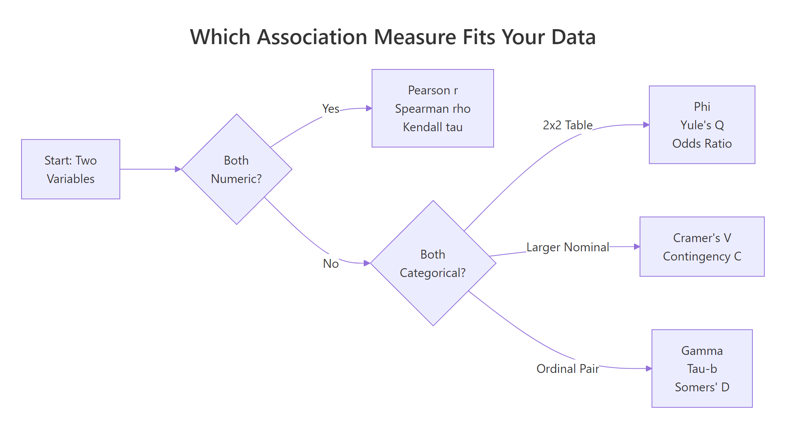
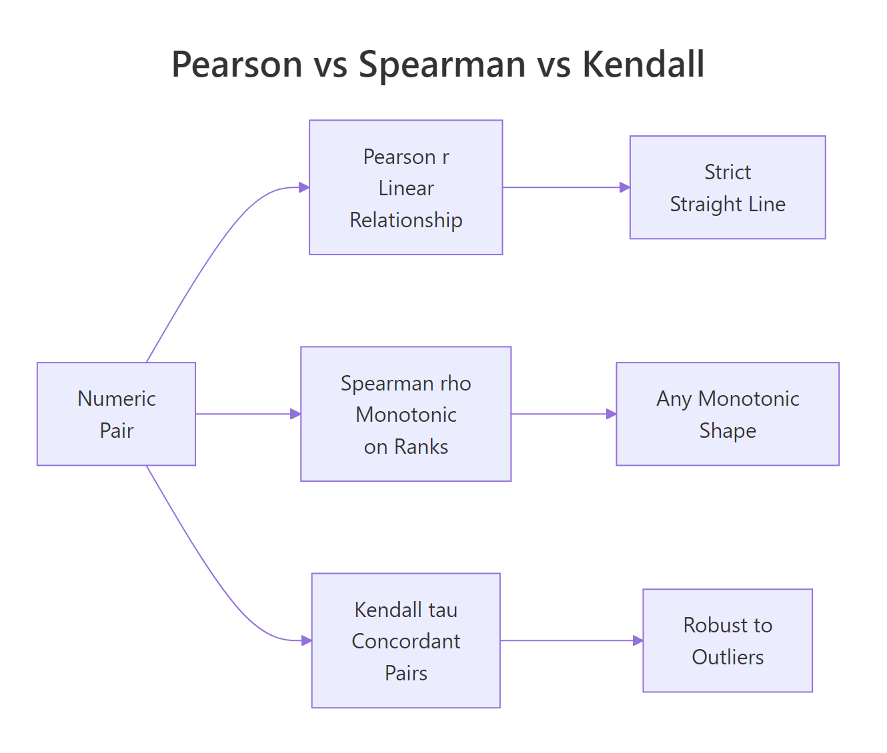
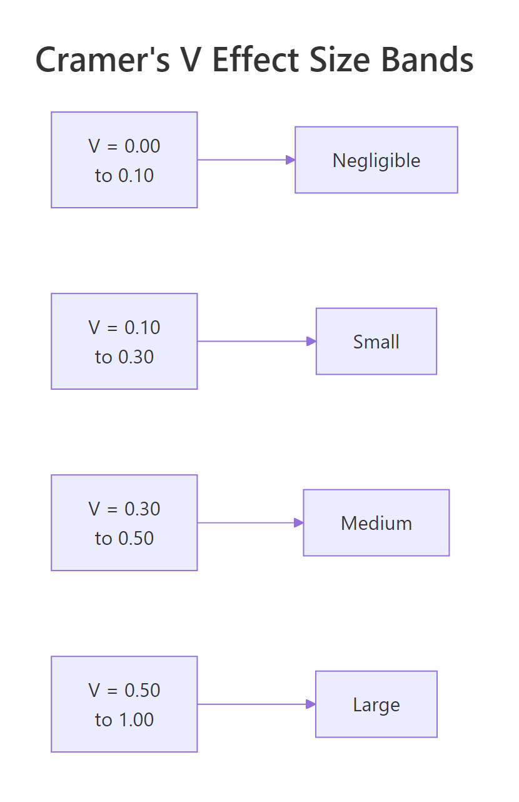

Measures of Association in R: Cramer's V, Phi, Pearson r With Examples
A measure of association is a single number that tells you how strongly two variables move together. The right choice depends on whether your variables are numeric, ordinal, or nominal — and using the wrong one can silently hide a real effect or invent a fake one. This tutorial covers every major measure you will meet in practice, with runnable R examples on built-in datasets and plain-English interpretation rules.
Which measure of association fits your variables?
You want one number that says "these two variables are related — and by how much." The number you pick has to match your data: two numeric columns want a correlation coefficient, two categorical columns want a chi-square–based measure, and ordinal data has its own toolbox. Let's start with the most familiar case — two numeric columns from mtcars — so you can see the payoff before we walk through the full taxonomy.
The correlation is -0.87, which means heavier cars burn more fuel per mile — a strong, near-straight-line relationship. That's exactly the kind of signal the Pearson correlation is built to detect. But notice the ingredients: two numeric columns and a roughly linear pattern. Break either assumption and Pearson's r is no longer the right answer.
The flowchart below is the decision rule you can use for any pair of variables in any dataset.

Figure 1: Pick the right measure of association based on your variable types.
Read the flowchart left to right. Both variables numeric? Use Pearson r (or Spearman / Kendall if the relationship is curved or noisy). Both categorical? It splits again — 2×2 tables get Phi or Yule's Q, bigger nominal tables get Cramer's V, and ordinal pairs get gamma, tau-b, or Somers' D. That's the whole map. The rest of this tutorial fills in how each one works and how to compute it in R.
Try it: Compute Pearson r between mtcars$hp (horsepower) and mtcars$mpg and store it in ex_r_hp_mpg. Round to 4 decimals.
Click to reveal solution
Explanation: cor() defaults to the Pearson method, so a single call on the two numeric columns returns their correlation. The result near -0.78 tells you more horsepower pairs with lower fuel economy — a clear negative linear relationship.
How do Pearson r, Spearman ρ, and Kendall τ handle numeric data?
For two numeric variables, R's cor() function gives you three options through its method argument. They answer slightly different questions, and the differences matter when your data has curves, outliers, or ties.
- Pearson r measures a linear relationship — how well a straight line fits the points.
- Spearman ρ (rho) ranks both variables first, then computes Pearson on the ranks. It captures any monotonic relationship — always rising or always falling, even if curved.
- Kendall τ (tau) counts concordant pairs (both variables move the same way) versus discordant pairs. It is the most robust to outliers but slowest to compute on large data.
Here are all three on the same mtcars pair we saw above.
All three agree on the direction (negative) and broadly agree on strength. Spearman is slightly stronger than Pearson, a hint that the true relationship between weight and mileage curves a little — the biggest cars lose mileage faster than the linear model expects. Kendall comes in lower because it counts pair-by-pair agreement rather than sizes, which always gives smaller values than the other two.
To see why Spearman can win decisively, here is a case where the relationship is perfectly monotonic but not linear.
Spearman nails the relationship at exactly 1 because the ranks line up perfectly. Pearson only reports 0.88 because the curve is not a straight line, so a linear fit leaves residuals. If you had only looked at Pearson here you would have underestimated the true association by more than 10 points.

Figure 2: Pearson, Spearman, and Kendall capture different kinds of relationships on numeric pairs.
Try it: Compute both Pearson and Spearman for mtcars$hp vs mtcars$qsec (quarter-mile time). Store them in ex_pr_hp_qsec and ex_sp_hp_qsec.
Click to reveal solution
Explanation: Faster cars (low qsec) tend to have more horsepower, so the correlation is negative. Pearson and Spearman both land near -0.7, with Pearson slightly stronger — a mild hint that the relationship is close to linear in this range.
How does the Phi coefficient measure association in 2×2 tables?
When both variables are binary — yes/no, male/female, auto/manual — you have a 2×2 contingency table and the right tool is the Phi coefficient. Phi is built directly on the chi-square statistic for the table.
$$\phi = \sqrt{\chi^2 / n}$$
Where:
- $\chi^2$ is the Pearson chi-square statistic for the 2×2 table
- $n$ is the total sample size
Phi ranges from 0 (no association) to 1 (perfect association), and for 2×2 tables you can also give it a sign based on the direction of the association. A useful mental anchor: Phi is what Pearson r becomes when you feed it two 0/1-coded variables.
Let's build a real 2×2 from mtcars: does transmission type (am: 0 auto, 1 manual) go with engine shape (vs: 0 V-shaped, 1 straight)?
A Phi of about 0.17 says the association between transmission and engine shape is weak — they are not independent, but knowing one tells you very little about the other. For context, Cohen's rule-of-thumb calls 0.10 small, 0.30 medium, and 0.50 large for 2×2 tables.
For the same 2×2 you can also compute Yule's Q, which rescales the odds ratio into the –1 to 1 range and is much more sensitive to association in small tables.
Yule's Q lands at 0.33 — about twice as strong as Phi on the same table. That is because Q ignores the marginal totals and looks only at the cross-product ratio, so it exaggerates small effects. Phi is the more conservative choice and usually the one you should report; Q is useful as a quick diagnostic.
Try it: Build a 2×2 from mtcars of am vs a new binary variable high_mpg (1 if mpg > 20, 0 otherwise) and compute Phi.
Click to reveal solution
Explanation: Manual cars (am = 1) are much more likely to have high mileage than automatics, so the Phi coefficient jumps to about 0.58 — a large association by Cohen's standard. That's a striking contrast with the 0.17 we saw between am and vs, and it shows how much the partner variable matters.
How do you compute Cramer's V for larger contingency tables?
When your categorical variables have more than two levels — hair color, education level, department — Phi no longer applies. Its generalization is Cramer's V, which handles any k × m contingency table.
$$V = \sqrt{\chi^2 / (n \cdot \min(r-1, c-1))}$$
Where:
- $\chi^2$ is the Pearson chi-square statistic for the full table
- $n$ is the total sample size
- $r$ and $c$ are the number of rows and columns
V always lives in [0, 1]. The denominator corrects for the fact that bigger tables inflate the chi-square statistic even when the underlying association is the same. For a 2×2 table, V reduces exactly to the absolute value of Phi.
Let's use HairEyeColor, a built-in 3-dimensional contingency table of hair, eye color, and sex. We first collapse across sex to get a flat 4×4 table.
Cramer's V of 0.28 means hair color and eye color share a medium-strength association — roughly what you would expect (blonde hair goes with blue eyes more often than with brown). The bias-corrected version nudges the estimate down slightly; for samples this large the correction barely matters, but for small samples (n < 50) it can move the number noticeably.
When you want every nominal measure at once, vcd::assocstats() prints Phi, contingency coefficient, Cramer's V, and the underlying chi-square test in a single call.
The output tells you three things at once: the chi-square test is highly significant (p ≈ 4e-6), the contingency coefficient is 0.34, and Cramer's V is 0.26. Phi is reported as NA because this is a 4×4 table, not 2×2 — assocstats() is honest about which measures apply to your table shape.
vcd::assocstats() when you want the full nominal toolkit in one line. It auto-detects when Phi is meaningful and prints the chi-square test alongside the effect sizes, so you get significance and strength together — which is exactly the two-column summary you usually want in a report.Try it: Compute Cramer's V for the 2×2 table of admit vs gender from UCBAdmissions, collapsed across department.
Click to reveal solution
Explanation: On the collapsed table there is a small association (V ≈ 0.14) that looks like gender bias in admissions. This is the famous Simpson's paradox: if you compute Cramer's V department by department instead, the effect vanishes or reverses. Always check whether collapsing a table hides a confounder.
Which measures fit ordinal data — gamma, tau-b, Somers' D?
When both variables have a natural order — low/medium/high, grades A–F, survey ratings — you leave information on the table if you use Cramer's V. Ordinal measures count concordant pairs (both variables move the same way) minus discordant pairs (they move in opposite directions) and scale the difference into a number between –1 and 1.
Three measures dominate this space:
- Goodman-Kruskal γ (gamma) — ignores ties entirely. Easy to interpret, but can be over-optimistic when there are lots of ties.
- Kendall τ-b (tau-b) — penalizes ties, symmetric (treats both variables the same way). The standard choice for square tables.
- Somers' D — asymmetric: it treats one variable as the "dependent" outcome and the other as the "predictor," so you get two possible values, D(Y|X) and D(X|Y).
Let's build a small 3×3 ordinal table — age group vs an income bracket — and compute all three.
All three agree on the direction (positive — older respondents tend to land in higher income brackets) but give very different magnitudes. Gamma is 0.71, the biggest because it ignores ties completely. Kendall's τ-b drops to 0.52 because it divides by a denominator that includes tied pairs, which deflates the apparent strength. Somers' D matches τ-b here because the table is symmetric; on an asymmetric table the two would diverge.
Which should you report? For a symmetric hypothesis — "are age and income associated?" — use τ-b. For a directional hypothesis — "does age predict income?" — use Somers' D and be explicit about which way round it points. Gamma is most useful as a quick first look because it has the simplest interpretation, but it can mislead when ties are common.
CramerV(ord_tbl) returns about 0.37 — much smaller than the ordinal measures, because it treats the categories as unordered labels and cannot "see" that YoungTry it: Build a 3×3 ordinal table of study hours (Low/Med/High) vs exam grade (C/B/A) with a clear positive pattern and compute Kendall's τ-b. Use this starter data: c(8, 3, 1, 2, 7, 3, 1, 2, 8) byrow.
Click to reveal solution
Explanation: The 8/7/8 diagonal plus small off-diagonals creates a strong positive ordinal pattern, and Kendall's τ-b correctly picks up a large effect near 0.61. Students who studied more got better grades, and the ordinal measure captures both the direction and the strength.
Practice Exercises
Time to put it all together. These two exercises each combine multiple concepts — picking the right measure, computing it, and interpreting the number.
Exercise 1: Pick the right measure for three mtcars variable pairs
Given three variables — mtcars$mpg (numeric continuous), mtcars$cyl (ordinal: 4, 6, 8) and mtcars$am (binary) — compute the correct measure of association for each of the three pairs and save the results to my_assoc_mpg_cyl, my_assoc_mpg_am, and my_assoc_cyl_am.
Click to reveal solution
Explanation: mpg vs cyl gives a near-perfect negative Spearman — more cylinders, lower mileage. mpg vs am uses Pearson (a binary variable works fine as the "numeric" input) and reports 0.60, a medium-to-large positive effect: manual cars get better mileage. cyl vs am is two ordinal-ish columns, so τ-b is the right pick and reports -0.53 — smaller-cylinder cars skew toward manual transmissions.
Exercise 2: Cramer's V and a full assocstats report on the Female slice of HairEyeColor
Compute Cramer's V for the female slice of HairEyeColor, save it to my_v_female, and print the full assocstats() summary for the same slice into my_assoc_female.
Click to reveal solution
Explanation: On the female slice the association is notably stronger than on the male slice (V ≈ 0.40 vs 0.26). That's a useful reminder that collapsing across a variable (sex, in this case) can hide real differences in how other variables interact — the decision flowchart only picks the type of measure; you still have to think about which subgroup you are measuring.
Complete Example: profile every variable pair in mtcars
Let's tie everything together. We'll walk through mtcars, classify each column as numeric, binary, or ordinal-like, pick the right measure for every pair, and build a tidy summary table.
The mtcars_assoc data frame is a map of how every variable connects to every other one, each measured with the right tool. The strong column flags the single pair (mpg vs cyl) with |association| > 0.7 — exactly the kind of redundancy signal you would want to see before feeding these variables into a regression. Think of this as a small audit you can run on any new dataset before modeling, so you know which variables carry the same information.
Summary
Here is the decision table condensed for fast lookup.
| Variable types | Measure | R function |
|---|---|---|
| Numeric × Numeric | Pearson r, Spearman ρ, Kendall τ | cor(..., method = ...) |
| 2×2 Nominal | Phi, Yule's Q, odds ratio | DescTools::Phi(), DescTools::YuleQ(), DescTools::OddsRatio() |
| k × m Nominal | Cramer's V, Contingency C | DescTools::CramerV(), vcd::assocstats() |
| Ordinal × Ordinal | Goodman-Kruskal γ, Kendall τ-b, Somers' D | DescTools::GoodmanKruskalGamma(), DescTools::KendallTauB(), DescTools::SomersDelta() |
| Nominal × Ordinal | Freeman's θ, epsilon-squared | rcompanion::freemanTheta(), rcompanion::epsilonSquared() |

Figure 3: Cohen's effect-size bands for Cramer's V on 2×2 tables.
The three big ideas to take away:
- Variable type decides the measure. Pick by looking at your columns, not by habit. Using Pearson on a nominal code is a bug, not a shortcut.
- Effect sizes and p-values answer different questions. A significant chi-square test tells you whether an association exists; Cramer's V tells you how big it is. Report both.
vcd::assocstats()is the one-line summary for nominal data, andDescToolscovers the ordinal measures your statistics textbook will ask about.
References
- Mangiafico, S. S. — R Handbook: Measures of Association for Nominal Variables. rcompanion.org. Link
- Cohen, J. — Statistical Power Analysis for the Behavioral Sciences, 2nd Edition. Lawrence Erlbaum (1988).
- Agresti, A. — Categorical Data Analysis, 3rd Edition. Wiley (2013).
- Meyer, D., Zeileis, A. & Hornik, K. — The Strucplot Framework: Visualizing Multi-Way Contingency Tables with vcd. Journal of Statistical Software 17(3), 2006. Link
- Signorell, A. — DescTools: Tools for Descriptive Statistics. CRAN package documentation. Link
- Goodman, L. A. & Kruskal, W. H. — "Measures of Association for Cross Classifications." Journal of the American Statistical Association 49(268), 732–764 (1954).
- Cramér, H. — Mathematical Methods of Statistics. Princeton University Press (1946).
Continue Learning
- Statistical Tests in R — the chi-square test that powers Phi and Cramer's V, plus t-tests, ANOVA, and non-parametric alternatives.
- Correlation Matrix Plot in R — visualize Pearson and Spearman matrices across many variables at once.
- Which Statistical Test in R? — a companion decision flow for picking the right hypothesis test once you know how your variables are associated.